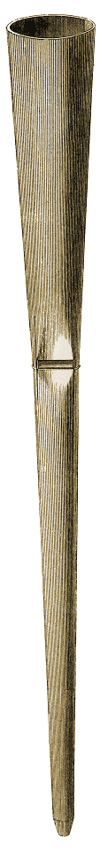
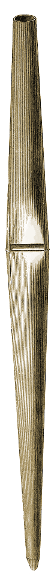
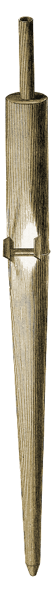
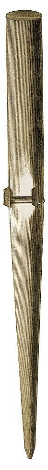
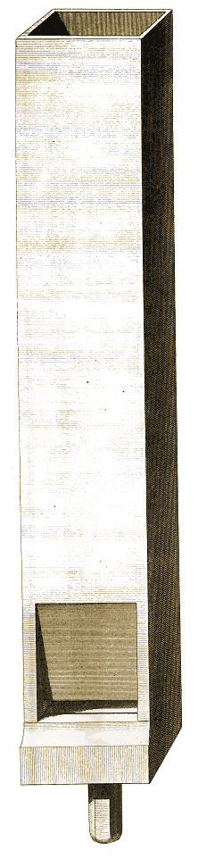
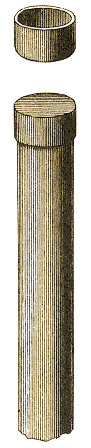

Figures
115, 116, 117, 118, 119, 120, 121, 122, 123, 124.
Planche : précédente - suivante.
| Fig. 123 | Fig. 122 | Fig. 121 | Fig. 119 | Fig. 118 | Fig. 117 | Fig. 116 | Fig. 115 |
| 154, 960. | 154, 964. | 152, 962, 964. | |||||
|  |  |  |  | ||||
|
Fig. 124 154.  |
Fig. 120 152, 962, 964.  |
Planche : précédente - suivante.